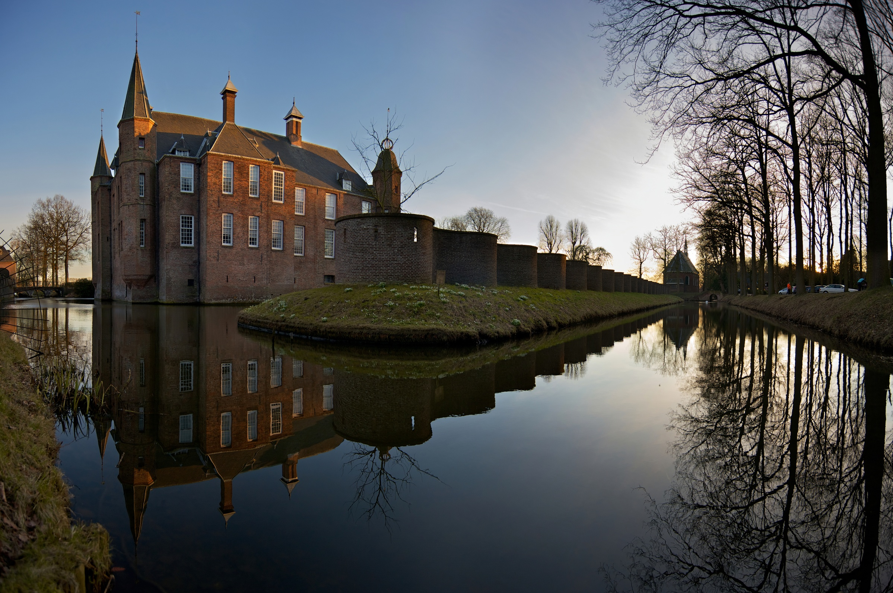

Populaire Kasteel Routes

Muiderslot & Omgeving
Ontdek het beroemde Muiderslot en de prachtige Gooise landschappen. Een perfecte dagtrip vanuit Amsterdam.
📠Noord-Holland
🚗 2.5 uur
â 4.8/5

Kasteel Bouillon
Verken een van de oudste kastelen van Europa in de Belgische Ardennen. Rijk aan geschiedenis en natuurschoon.
📠België
🚗 4 uur
â 4.9/5

Slot Zuylen
Renaissance kasteel met prachtige tuinen en een rijke literaire geschiedenis. Perfect voor cultuurliefhebbers.
📠Utrecht
🚗 1.5 uur
â 4.7/5